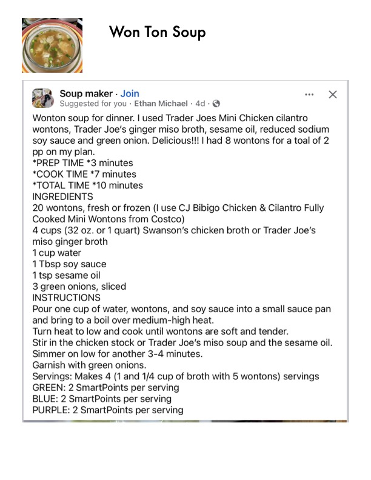

Won Ton Soup

Original cookbook page 651
Ingredients
- 20 wontons, fresh or frozen (I use CJ Bibigo Chicken & (
- Cooked Mini Wontons from Costco)
- 4 cups (32 0z. or 1 quart) Swanson's chicken broth or Ti
- miso ginger broth
- 1 cup water
- 1 Tbsp soy sauce
- 1 tsp sesame oil
- 3 green onions, sliced
Instructions
- Pour one cup of water, wontons, and soy sauce into a sr and bring to a boil over medium-high heat. Turn heat to low and cook until wontons are soft and ter Stir in the chicken stock or Trader Joe's miso soup and 1 Simmer on low for another 3-4 minutes. Garnish with green onions.
Recipe #651 from collection